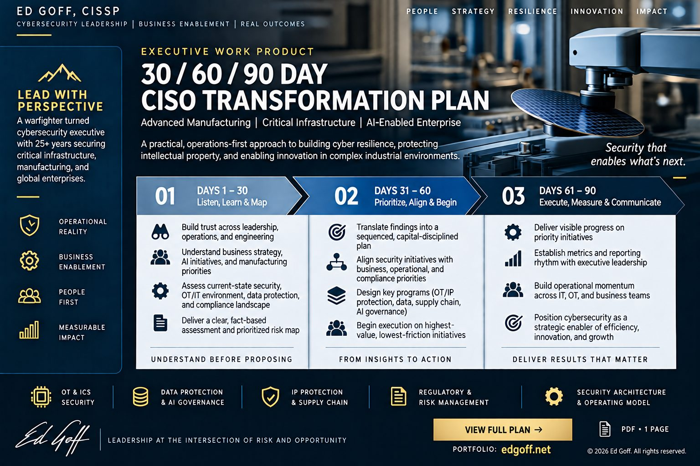

Ed Goff, CISSP - Enterprise Cybersecurity Executive - Security Architecture, Identity and Access Management, AI Governance
The work behind the resume.
Case studies, the frameworks I actually use, and the public standards I helped write. Collected here so a recruiter, a hiring executive, or a board can judge the work directly rather than take a resume's word for it.
Outcomes delivered
- $200M Federal energy award secured Led the security and interoperability case behind the maximum Department of Energy smart grid award, inside a $526.6M modernization program.
- 1,987 Applications converged in a merger of equals Identity integration across two banks through multiple conversion events, with virtually no customer or teammate disruption.
- 595% Delivery efficiency gain in four months Documented, through a department-wide Agile transformation establishing a new release train, backlog management, and continuous improvement.
- 300+ Security professionals led Global identity and access organizations spanning engineering, governance, and 24x7 operations.
On the public record
- Original NIST Cybersecurity Framework Contributor, OT subject matter expert
- Lead author, ACM CISR '14 Peer reviewed, DOI registered
- BITS Identity and Access Primer Led the privileged access working group
- CISSP Continuously certified since 2004
Selected work

How I Plan the First Ninety Days
The three-phase structure I use when taking over a security program in a regulated business, the rule for sequencing what gets built first, and the five things that carry across every use of it. Includes the detailed plan as a one-page PDF.
Read the frameworkApproach
For twenty-five years I have been handed the problems that did not yet have an owner. Build an enterprise security architecture function where none existed. Converge the identity estates of two banks through a merger of equals without interrupting a single customer. Secure a grid modernization program before the standards governing it had been written.
What I actually do is narrower than the title suggests. That last clause above is the part most programs get wrong: a control that depends on its architect is not a control.
The work I am most known for outside my employers has been collaborative and public - national standards, sector-wide maturity models, and procurement language now used across the energy industry.
The rest of the portfolio
Published Work
Federal and industry documents, including a peer-reviewed ACM paper and procurement language now used across the energy sector.
4 documentsStandards and National Initiatives
Contributions to the NIST Cybersecurity Framework, ES-C2M2, NERC CIP, and the DOE energy delivery systems roadmap.
5 initiativesHow I Work
Reusable frameworks and operating artifacts: how I plan the first ninety days, how I assess a program, how I structure governance.
1 frameworkCareer
Enterprise security and identity leadership across critical energy infrastructure and the nation's largest financial institutions.
Energy and financial servicesCapabilities
What I build and operate, stated at the level a hiring executive or a consulting buyer needs in order to scope the work.
7 domainsCredentials
CISSP, continuously certified since 2004, alongside current AI credentials and education. Every one carries a verification link.
10 verification linksCurrent
I concluded my tenure as Senior Vice President and Head of Identity and Access Management at Huntington National Bank in September 2026.
I am in conversation with organizations about enterprise cybersecurity leadership - Chief Information Security Officer, Head of Security Architecture, and Head of Identity and Access Management - and I take a small number of advisory engagements in identity, AI governance, and operational technology security. I currently advise CyberCodee on product strategy for agentic AI applied to IAM and cybersecurity maturity assessment.
Based in Raleigh, North Carolina. The most reliable way to reach me is email.